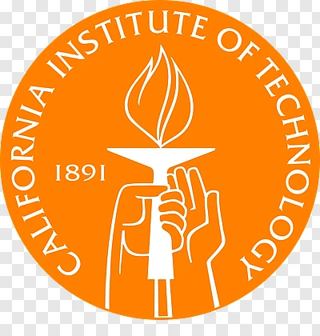
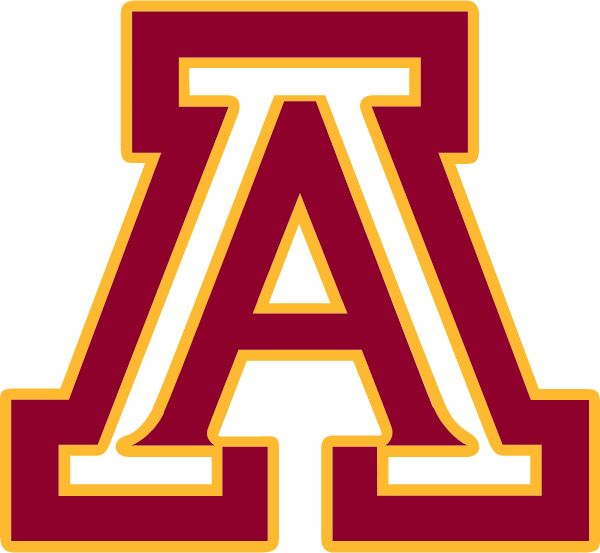

Anika Singh
consulting · data analytics · strategy

Princeton University
Research Analyst
Jun 2025 – Sep 2025 · 4 mos
Analyzed reporting processes for research computing metrics and collaborated with team leads to enhance data retrieval. Translated complex findings into actionable recommendations, with a focus on improving efficiency through workflow adjustments and analytics automation. Developed dashboards to visualize key performance indicators for stakeholders.
Data Analysis
Requirements Gathering
Dashboard Design
Process Improvement
Stakeholder Communication

Caltech · LIGO
Data Analytics Intern
Sep 2023 – Jun 2024 · 10 mos
Pasadena, CA
Worked on data visualization and database management for gravitational wave research. Built interactive dashboards using Python and Grafana, enabling scientists to explore complex datasets. Translated technical data into clear visual narratives, and collaborated with researchers to improve data accessibility.
Python
Data Visualization
Grafana
InfluxDB
Dashboard Development
Cross-functional Collaboration

University of California, Riverside
Undergraduate Researcher
Jun 2023 – Aug 2023 · 3 mos
Riverside, CA
Conducted genomic data mining research on Type 1 Diabetes using sc-RNAseq data. Implemented normalization, dimensionality reduction, and clustering pipelines in R. Presented findings to faculty and peers, translating complex statistical results into clear insights.
R Programming
Data Mining
Statistical Analysis
sc-RNAseq
Presentation Skills
UCLA
Project Manager & Data Analyst
September 2025 – December 2025
Spearheaded a data analysis project to identify key predictors of female legislative representation, investigating political and economic systems; this purpose-driven work aligns with social challenges and equity goals.
Managed a cross-functional team in building a public GitHub Pages site, preparing and submitting statistical findings and visualizations with high-quality formatting, translating data into an accessible narrative.
Project Management
Data Analysis
Statistical Modeling
GitHub Pages
Data Visualization
Team Leadership
Social Impact
She.Codes
Board Member
Aug 2022 – May 2023 · 10 mos
Pasadena City College
Organized the NASA Space Apps Challenge hackathon and led professional development workshops. Collaborated with industry speakers from Snap Inc. and Siemens. Focused on creating inclusive environments to bridge the gender gap in STEM.
Event Planning
Hackathon Organization
STEM Outreach
Community Engagement
Workshop Facilitation
University of California, Los Angeles (UCLA)
B.S. in Statistics and Data Science
Expected June 2026
Los Angeles, CA
Coursework includes statistical modeling, machine learning, data visualization, experimental design, and consulting projects. Engaged in case competitions and collaborative analytics projects with real-world datasets.

Arcadia High School
High School Diploma (CHSPE)
Graduated at age 15
Arcadia, CA
Graduated early by passing the California High School Proficiency Exam (CHSPE). Completed advanced coursework in mathematics and computer science while accelerating my path to university.
I graduated high school at the age of 15, conducted genomic data mining as an undergraduate researcher at UCR, and interned at Caltech's LIGO. As an aspiring data scientist with a strong interest in consulting and data analytics, I love picking up new skills and contributing to something bigger than myself.
Whether it's analyzing scientific data or optimizing business processes, I'm driven to collaborate, translate insights, and deliver impact.